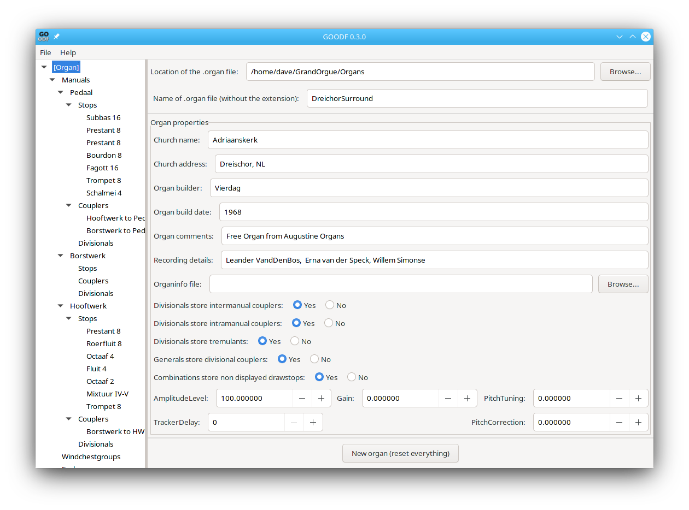

With GoOdf you can:
Create organ description files (aka .organ files) for GrandOrgue without having to edit the large .organ text file manually.
Load samples into the pipes of a rank/stop using MIDI number detection from directories and sub-directories of .wav files
Easily create multiple panels conforming to the new panel format of GrandOrgue.
Add GUI representations of ODF objects with ease, using standard Graphical elements already defined in GrandOrgue, or fully custom Graphical elements.
Add additional graphic elements to panels such as Labels and Images, including custom graphics for each drawstop and manual key.
See all the parameters associated with each object on a single window.
See a hierarchical view of all objects on the left side of the GoOdf window (see screenshot below)
Automatically keeps track of the number of subsidiary objects for each object being defined.
Object relationships are not always the same in GoOdf as in the .organ file. GoOdf hides these complexities and allows visibility of all objects that can be referenced by a second object in that second objects window.
